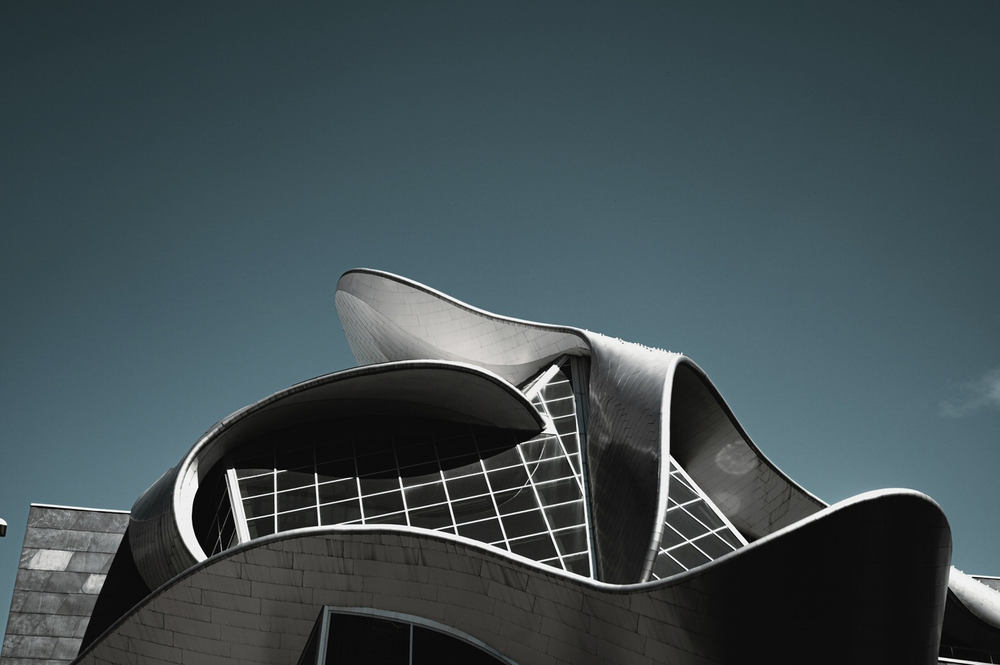

Vier fases, één doel: jouw merk sterker maken. Van strategie tot langetermijn groei — wij begeleiden het hele traject.
Vier fases die samen een cyclus vormen. Elk merk begint op een ander punt — wij starten waar jij ons nodig hebt.

Geen pixel zonder plan.
Elk sterk merk begint met een heldere richting. Wij duiken diep in je merk, markt en doelgroep om een strategie te bouwen die alles verbindt.
Waar sta je nu, waar wil je naartoe? Wij bepalen je unieke positie in de markt en vertalen die naar een helder merkverhaal.
Data-gedreven inzichten over je doelgroep, concurrentie en marktpositie. Geen aannames, maar feiten.
Een plan voor wat je zegt, waar je het zegt en waarom. Zodat elke uiting bijdraagt aan je merkbelofte.
Wie is je ideale klant? Wij bouwen gedetailleerde persona's die je hele communicatie aanscherpen.
"Van een leeg pand naar een merk dat leeft. De strategische basis voor alles wat volgde."
Bekijk case →Van concept tot meesterwerk.
Hier wordt strategie zichtbaar. Wij combineren design, film en technologie om merkervaringen te creëren die blijven hangen.
Logo, kleuren, typografie, beeldtaal — een complete visuele identiteit die je merk onmiskenbaar maakt.
Brand films, commercials, social video — cinematic storytelling die je merk tot leven brengt.
Custom websites die converteren. Webflow, animaties, UX — geen templates maar maatwerk.
Van presentaties tot verpakkingen, van social templates tot drukwerk — consistent en on-brand.

"Een complete rebrand inclusief brand film die het verschil maakte op de beursvloer."
Bekijk case →
Gevonden worden. Groeien. Domineren.
Een sterk merk verdient een publiek. Wij zorgen dat je zichtbaar bent waar het ertoe doet — en dat je blijft groeien.
Structureel bovenaan in Google. Technische SEO, content en linkbuilding die resultaat oplevert.
Data-gedreven campagnes met meetbare ROI. Elke euro verantwoord, elk resultaat transparant.
Geen random posts maar een doordacht plan. Content die resoneert en community die groeit.
Blogs, video's, podcasts, whitepapers — content die je expertise toont en leads genereert.

"Van onzichtbaar naar #1 in Google. 340% meer organisch verkeer in 6 maanden."
Bekijk case →Wij blijven. Altijd.
Na de lancering begint het pas. Wij monitoren, onderhouden en ontwikkelen door — zodat jij je kunt focussen op je business.
Snelle, veilige hosting met 99.9% uptime. Inclusief dagelijkse backups en proactief onderhoud.
SSL, firewalls, malware scanning en automatische updates. Je site is altijd veilig en up-to-date.
Wekelijkse rapportages over snelheid, uptime en SEO-scores. Problemen fixen we voordat jij ze merkt.
Nieuwe features, optimalisaties, A/B tests — je website groeit mee met je bedrijf.
"Al 3 jaar onze digitale partner. Van hosting tot doorontwikkeling — altijd bereikbaar, altijd proactief."
Bekijk case →Van eerste gesprek tot langetermijn groei — ons proces in vijf stappen.
Een vrijblijvend gesprek om je merk, ambities en uitdagingen te begrijpen. Wij luisteren eerst.
Op basis van onderzoek en analyse bouwen we een strategie die richting geeft aan alles wat volgt.
Design, film, website, content — wij brengen de strategie tot leven met premium producties.
Go live. We lanceren campagnes, activeren kanalen en zorgen dat alles vlekkeloos draait.
Meten, optimaliseren, schalen. Wij blijven betrokken en zorgen dat je merk blijft groeien.

Elk traject begint met een gesprek. Vertel ons over je merk en ontdek wat we samen kunnen bereiken.